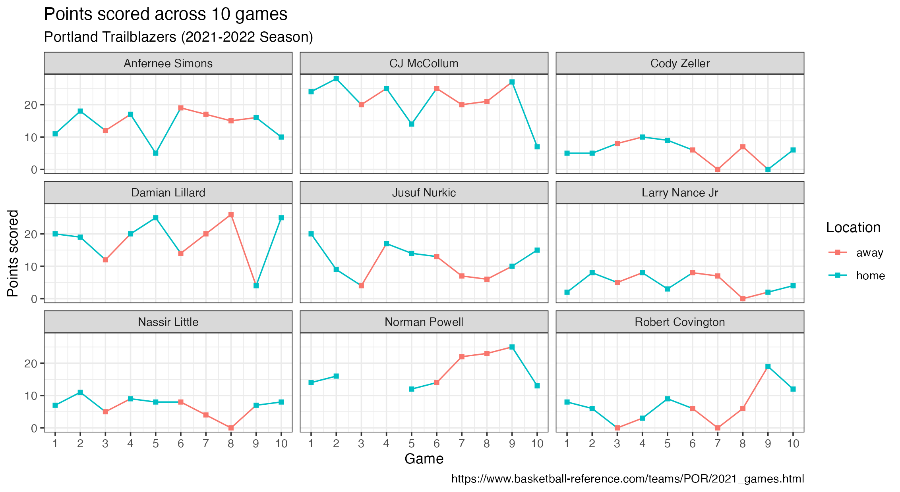

Tidy basketball
Packages
We will use the following the tidyverse package for data import, wrangling, and visualization in this programming exercise.
Let’s first load the package.
library(tidyverse)Data
The Portland Trailblazers are a National Basketball Association (NBA) sports team. In this mini analysis, we will work with a dataset that has information on the points scored by 9 Portland Trailblazers players across the first 10 games of the 2021-2022 NBA season. If you would like to become more familiar with the game of basketball, you can read this Wikipedia article. If you would like more information on the Portland Trailblazers, you can find out more about them on Wikipedia as well.
A partial data dictionary is provided below.
| variable name | description |
|---|---|
player |
Name of player |
game1_home |
Points scored on game 1 on home court |
| … | … |
game3_away |
Points scored on game 3 on away court |
| … | … |
game10_home |
Points scored on game 10 on home court |
Read in the data by running the code below.
Use glimpse() to get an overview (or “glimpse”) of the data. How many rows and columns are in this dataset? In addition, make note of the types of variables you are working with.
Solution
There are 9 rows and 11 columns in blazer dataset. player is a character variable; the remaining variables are doubles.
glimpse(blazer)Suppose you are asked to recreate the plot below.

Identify the variables you would need to use to recreate the above plot. Can this plot be recreated with the blazer dataset as it’s currently formatted?
Solution
Variables in the above plot include player, game, location, and points. This plot can not be recreated with how the blazer dataset is currently formatted.
Reshaping data
Now, think critically about how we could transform our blazer dataset to include the variables necessary to make the plot above. What would our new dataset have to look like? What R function(s) could we use to transform our data into what we need?
Solution
We have a player column in the dataset. In order to get a game, location, and points, we can use pivot_longer(), which will take this wide dataset and make it into a longer dataset. That is, we can bring the variable names of game1_home, game2_home, etc. into our dataset as values, which is needed to recreate the plot above.
To accomplish this task, we’ll use pivot_longer().
Use pivot_longer() to reshape blazer into a longer data frame with three columns (player, game, and points) and 90 rows.
Hint 1
Pivot all columns except for player.
blazer |>
pivot_longer(
cols = !player,
___,
___
)
Hint 2
The variable names from blazer should go to a new column called game. We quote this text because it’s not a column that yet exists in our dataset.
blazer |>
pivot_longer(
cols = !player,
names_to = "game",
___
)
Solution
The values from blazer should go to a new column called points. We quote this text as well because it’s not a column that yet exists in our dataset.
blazer |>
pivot_longer(
cols = -player,
names_to = "game",
values_to = "points"
)What are the next steps we need to take to transform our dataset further to recreate the plot above?
Solution
We still need to:
- Remove the text string
"game"from thegamecolumn. - Separate the numeric value of game from location (home or away) and store these pieces of information in two separate columns.
Revisit the documentation for pivot_longer(). Add the argument names_prefix to your existing code above to remove the text “game” from the game column.
Solution
Set names_prefix to "game" to remove this text from the variable names when pivoting the data frame.
blazer |>
pivot_longer(
cols = -player,
names_to = "game",
values_to = "points",
names_prefix = "game"
)Next, we need to separate the values away from the location in the game column. A handy function for accomplishing this task is separate_wider_delim().
Continue building up your data transformation pipeline to add a new step using separate_wider_delim() to separate the game number and game location into two columns. Call these new columns game_number and game_location. Save the resulting data frame as blazer_longer.
Solution
blazer_longer <- blazer |>
pivot_longer(
cols = -player,
names_to = "game",
values_to = "points",
names_prefix = "game"
) |>
separate_wider_delim(game, delim = "_", names = c("game_number", "game_location"))
blazer_longerSummarizing data
Let’s use the newly created blazer_longer dataset to calculate some summary statistics for the Portland Trailblazers to learn more about their performance for these 10 games!
Calculate the mean points scored across all players between home and away games.
Hint
This sounds like a group_by() |> summarize() task!
Solution
group_by(game_location) and then summarize() to find the mean number of points for each type of game location (home and away).
blazer_longer |>
group_by(game_location) |>
summarize(mean_points = mean(points, na.rm = T))Next, calculate the mean points scored by the player Damian Lillard for both home and away games.
Hint
Filter for the player first!
Solution
Filter for the player first, and then use the same group_by() and summarize() steps from the previous exercise.
blazer_longer |>
filter(player == "Damian Lillard") |>
group_by(location) |>
summarize(mean_points = mean(points, na.rm = T))For each player, calculate how many times they scored 15 points or more per game and how many times they scored fewer than 15 points per game.
Solution
blazer_longer |>
mutate(points_15 = ifelse(points >= 15, "15 or more", "Fewer than 15")) |>
count(player, points_15)Visualizing data
Recreate the following plot using the blazer_longer dataset!
Hint 1
game needs to be a numerical variable, so start by fixing that first!
blazer_longer |>
mutate(game = as.numeric(game)) |>
___
Hint 2
The plot is facet_wrapped by player.
blazer_longer |>
mutate(game = as.numeric(game)) |>
ggplot(___) |>
___ |>
facet_wrap(~player) |>
___
Hint 3
The plot uses theme_bw().
blazer_longer |>
mutate(game = as.numeric(game)) |>
ggplot(___) |>
___ |>
facet_wrap(~player) |>
___ |>
theme_bw()
Solution
Instead of running the entire solution at once, run it one line at a time to see how the plot develops!
blazer_longer |>
mutate(game_number = as.numeric(game_number)) |>
ggplot(
aes(
x = game_number, y = points,
color = game_location, group = player
)
) +
geom_line() +
geom_point(shape = "square") +
facet_wrap(~player) +
scale_x_continuous(breaks = c(1:10)) +
theme_bw() +
labs(
x = "Game",
y = "Points scored",
color = "Location",
title = "Points scored across 10 games",
subtitle = "Portland Trailblazers (2021-2022 Season)",
caption = "https://www.basketball-reference.com/teams/POR/2021_games.html"
)